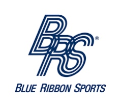
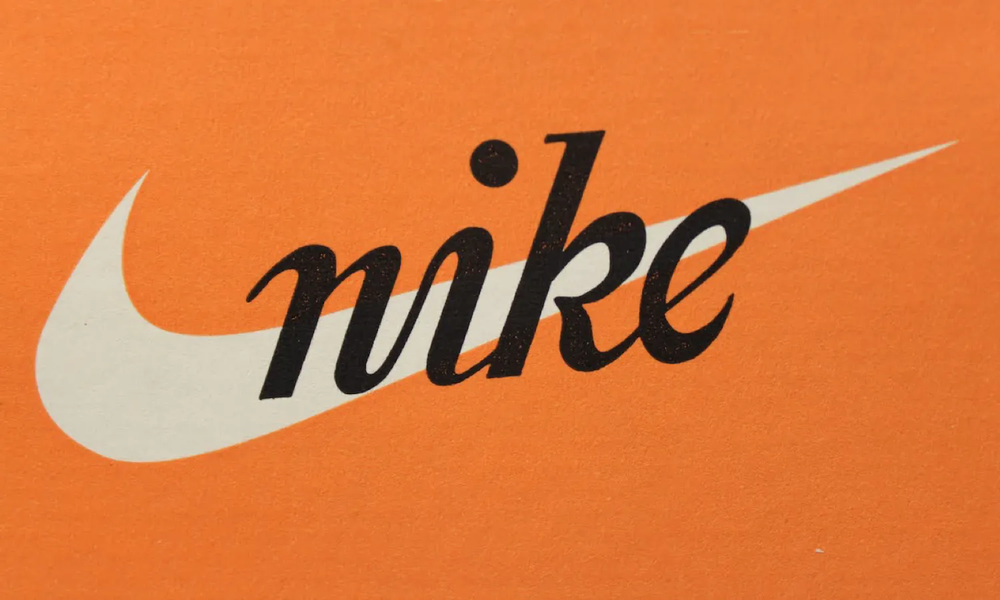
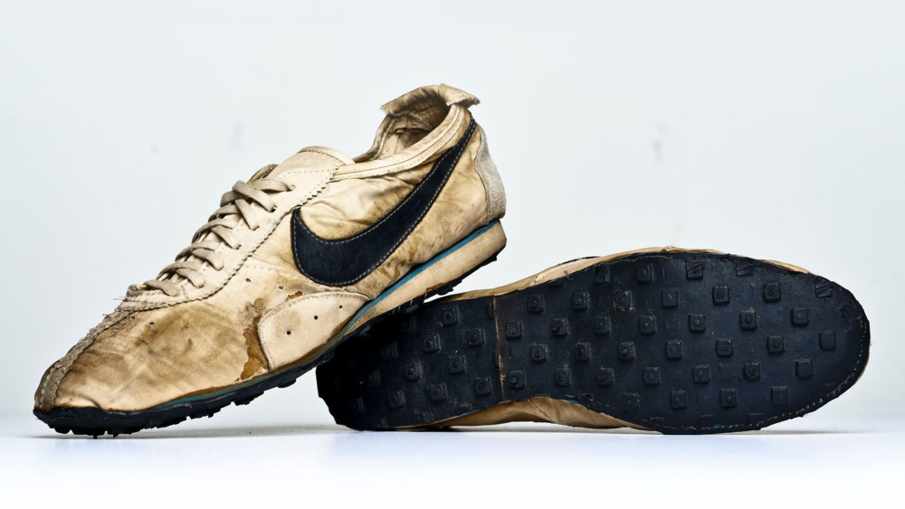
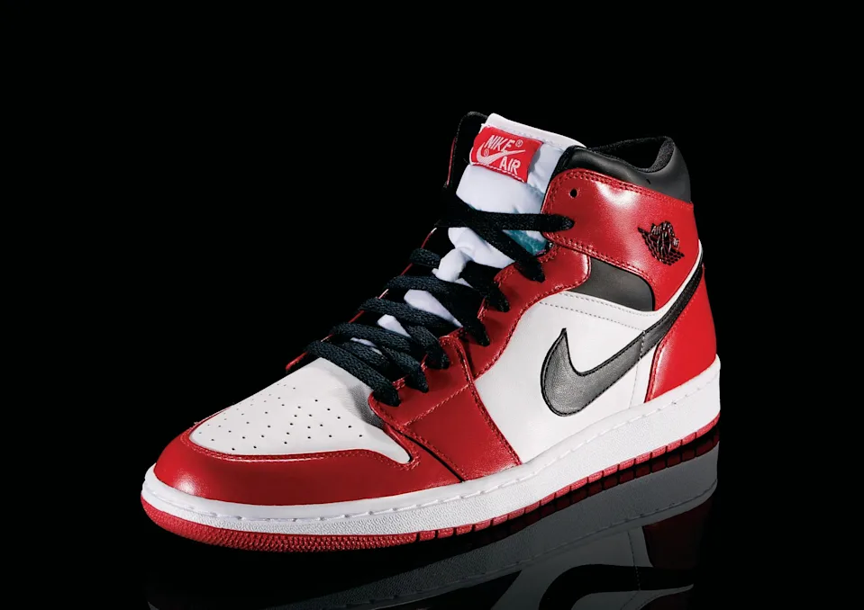
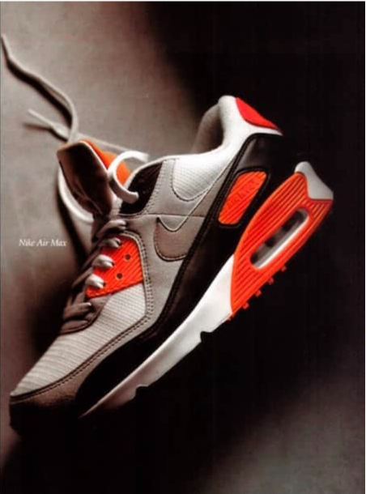

1964
Oprichting Blue Ribbon Sports

Nike werd oorspronkelijk opgericht als Blue Ribbon Sports door Phil Knight en Bill Bowerman.
1971
Naam Nike & Swoosh logo

De naam Nike werd ingevoerd en het iconische Swoosh-logo werd ontworpen.
1972
Eerste Nike schoenen

Nike lanceerde zijn eerste eigen schoenenlijn.
1984
Air Jordan samenwerking

Nike tekende een contract met Michael Jordan en lanceerde Air Jordan.
1988
Just Do It

De beroemde slogan "Just Do It" werd geïntroduceerd.
1990
Nike Air Max

De populaire Air Max-lijn werd wereldwijd bekend.
2000
Digitale innovatie

Nike begon met technologische innovaties in sportkleding.
2012
Flyknit technologie

Nike introduceerde Flyknit voor lichtere en duurzamere schoenen.
2016
Zelfstrikkende schoenen

Nike bracht zelfstrikkende schoenen uit geïnspireerd door Back to the Future.
2020
Duurzaamheid

Nike focust steeds meer op duurzame productie en materialen.